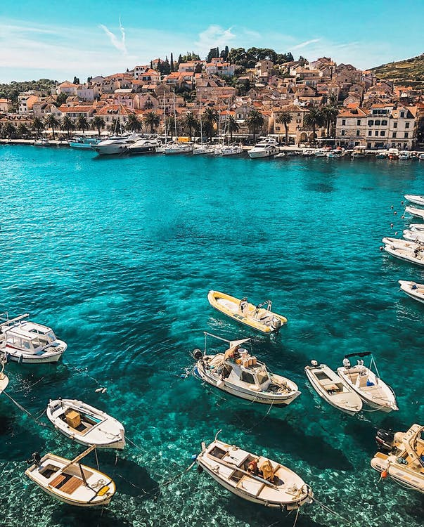
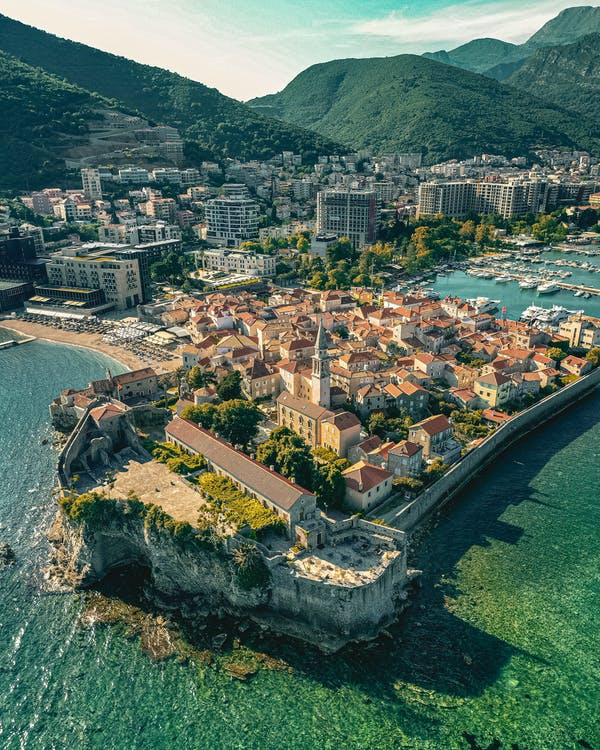

The Adriatic contains more than 1,300 islands, mostly located along the Croatian part of its eastern coast. It is divided into three basins, the northern being the shallowest and the southern being the deepest, with a maximum depth of 1,233 metres (4,045 ft). The Otranto Sill, an underwater ridge, is located at the border between the Adriatic and Ionian Seas. The prevailing currents flow counterclockwise from the Strait of Otranto, along the eastern coast and back to the strait along the western (Italian) coast.
The unique nature of the Adriatic gives rise to an abundance of endemic flora and fauna. The Croatian National Biodiversity Strategy Action Plan identified more than 7,000 animal and plant species in the Adriatic Sea. The Central Adriatic is especially abundant in endemic plant species, with 535 identified species of green, brown and red algae. Four out of five Mediterranean seagrass species are found in the Adriatic Sea. The most common species are Cymodocea nodosa and Zostera noltii, while Zostera marina and Posidonia oceanica are comparatively rare.
The coastal regions of Croatia are comprised of the old Croatian states of Istria, Kvarner and Dalmatia. Dalmatia, or the Dalmatian Coast as it is more commonly known, can be divided into three regions: North Dalmatia, including Sibenik and Zadar, Central Dalmatia, including Trogir, Split, Hvar and Brac, and finally South Dalmatia, including Korcula and Dubrovnik.
The Adriatic coast of Montenegro intrigues, tempts, captivates anyone it comes across. The growing interest for this region can attest it. But is this tourist attraction really worth it? Good question! Thanks for asking! Where should we start? Between Budva and its nightlife, or Sveti Stefan and its peninsular village, everything seems to work in favour of the coast.
